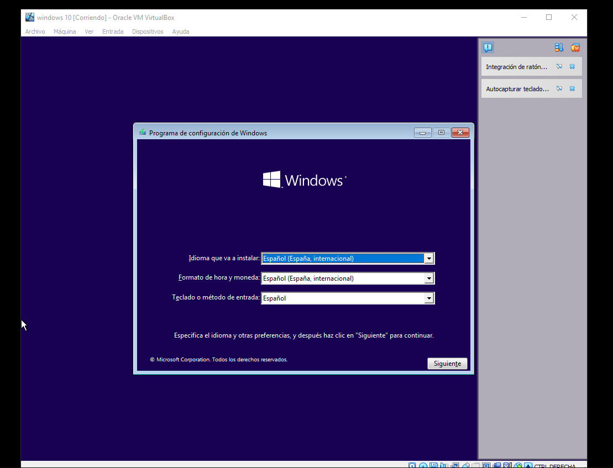
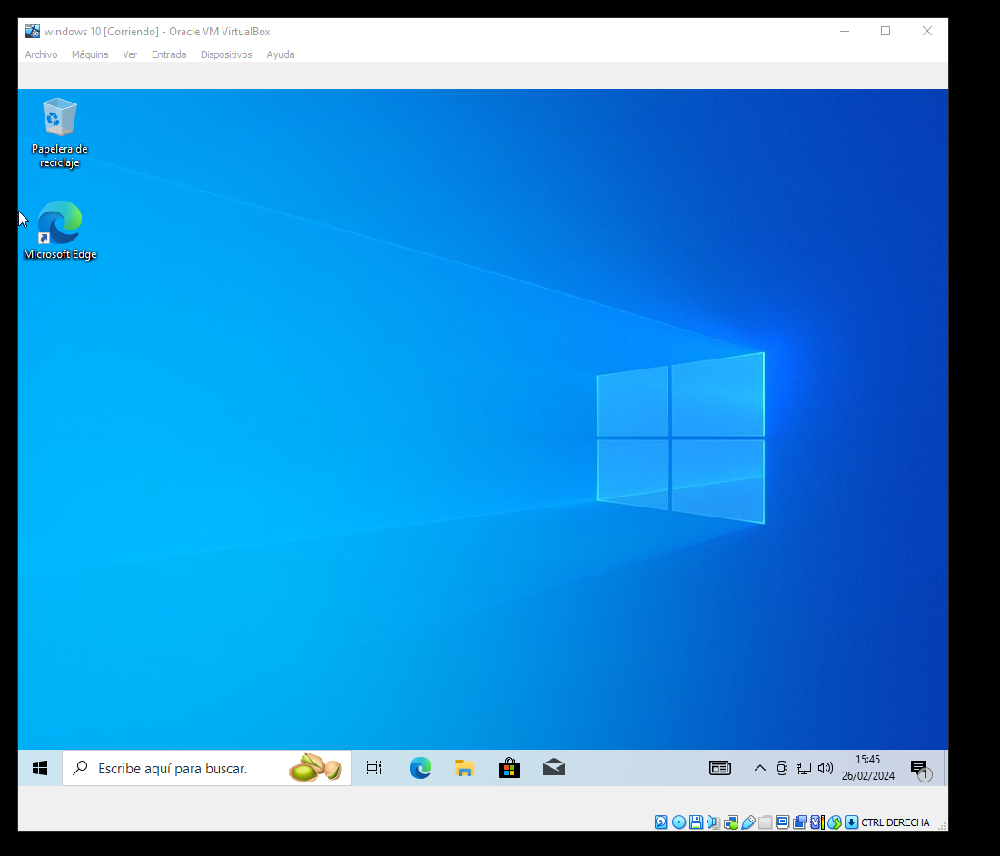

Instalación de Windows
Windows lo podemos descargar de su página oficial. Aquí podremos encontrar diferentes versiones.
Lo recomendable será instalar su ultima version pero nosotros trabajaremos con windows 10, la cual podrás descargar desde aquí. Se descargará un archivo ISO.
Creacion de la Maquina virtual con Windows

Dale un nombre a tu máquina virtual y elige el tipo y versión del sistema operativo.
Asegúrate de marcar específicamente la versión de 64 o 32 bits que concuerde con el archivo ISO que bajaste desde la web de Microsoft. Luego haz click en "Next"
Lo siguiente es elegir la cantidad de memoria RAM que tendrá disponible tu máquina virtual.
Para Windows 10 de 64 bits lo recomendado son 2 GB o 2048 MB. En el gráfico puedes ver toda la disponible en tu PC, y cuando te acercas a el rojo, quiere decir que estás asignando demasiado.

Ahora deberás crear un disco duro virtual. El tamaño recomendado son 32 GB. Si tuvieses un archivo de disco duro virtual ya existente, podrías usarlo.
Si no creas un disco duro virtual, no podrás instalar Windows.

Una vez instalada la máquina virtual, tenemos que arrancar la ISO y proceder con la instalación del sistema operativo.
Asignamos el Windows que queremos en nuestro sistema.

Una vez terminada la instalación, ya tenemos el sistema operativo en funcionamiento en la máquina virtual.
 Regresar